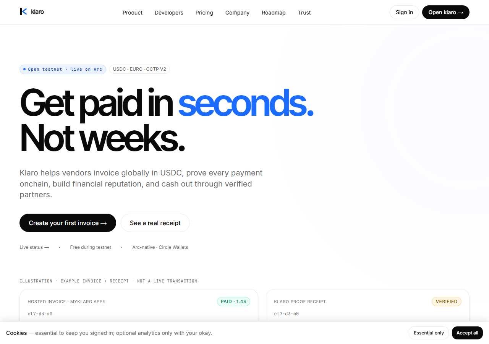
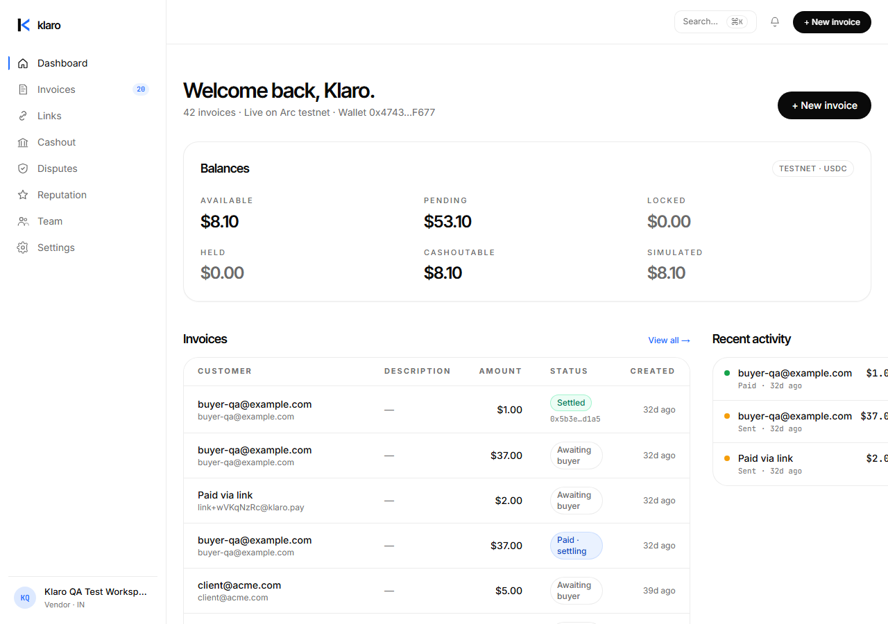
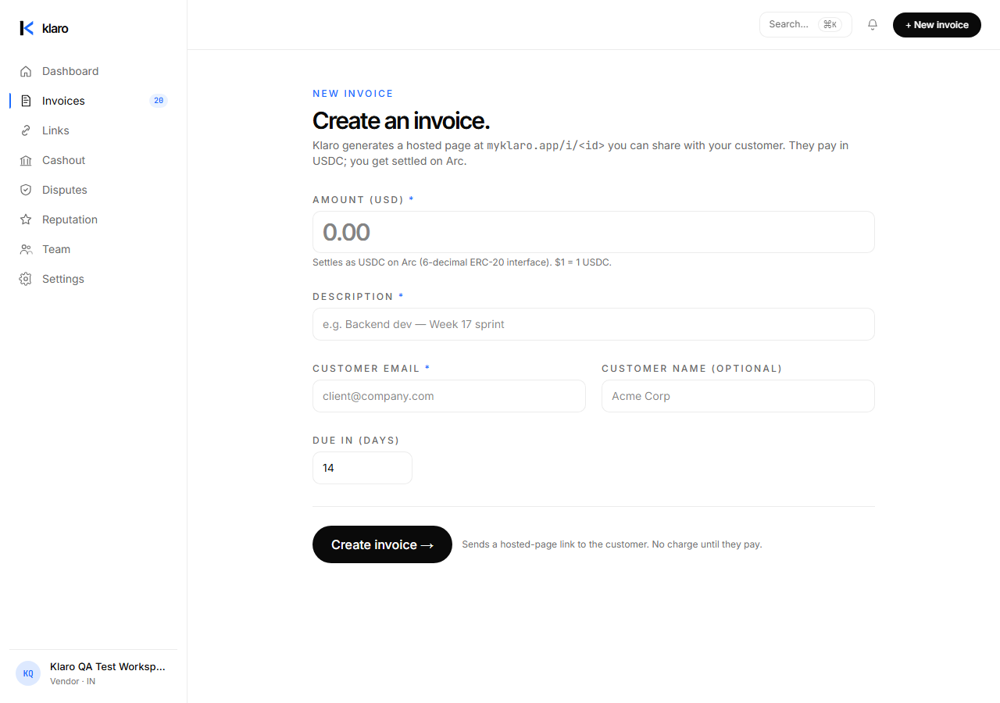
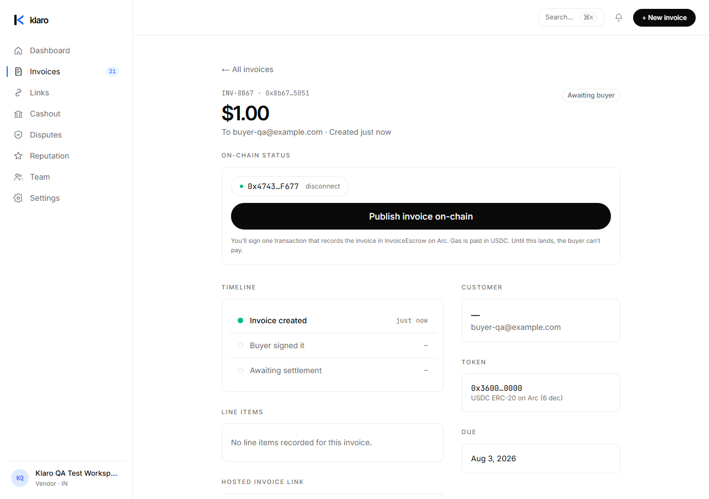
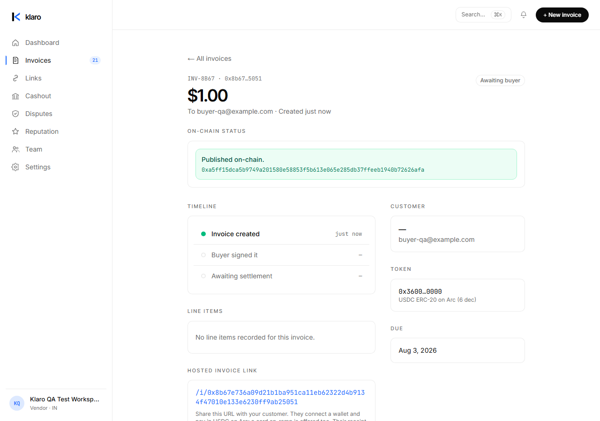
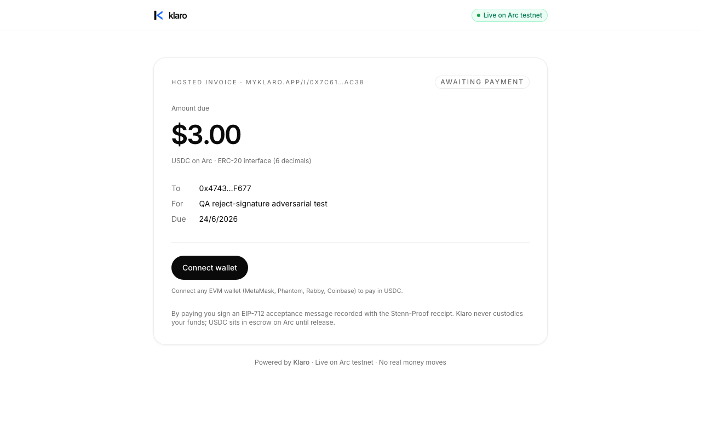
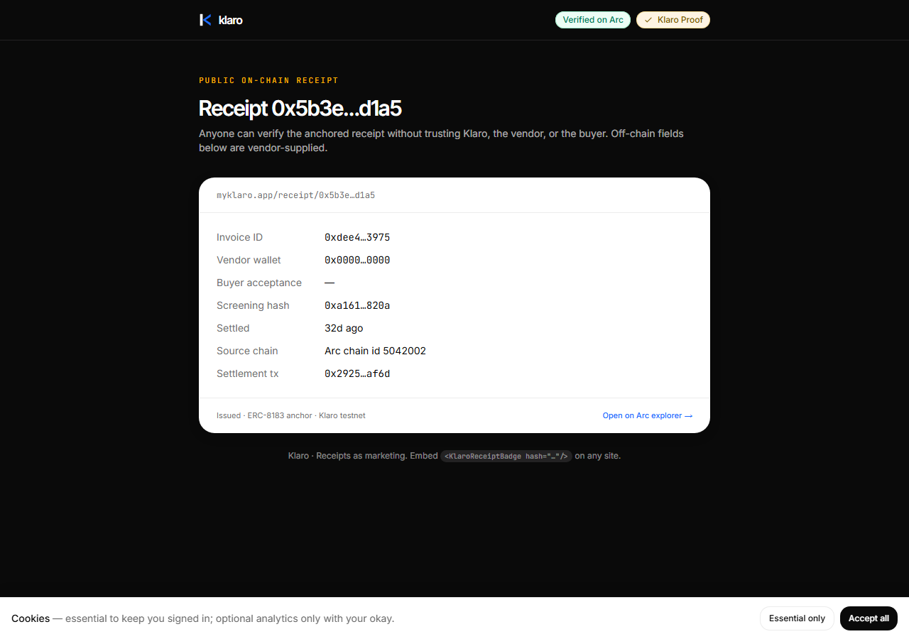
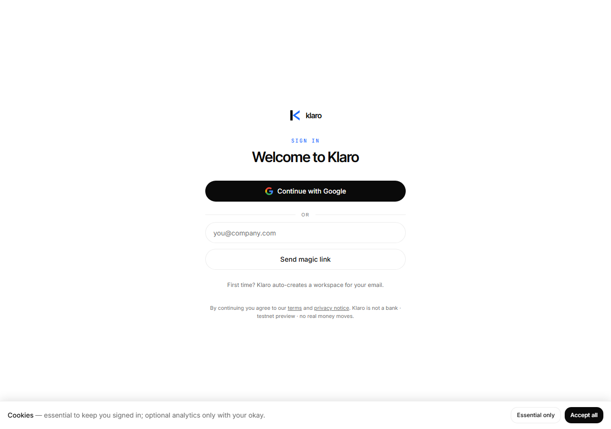
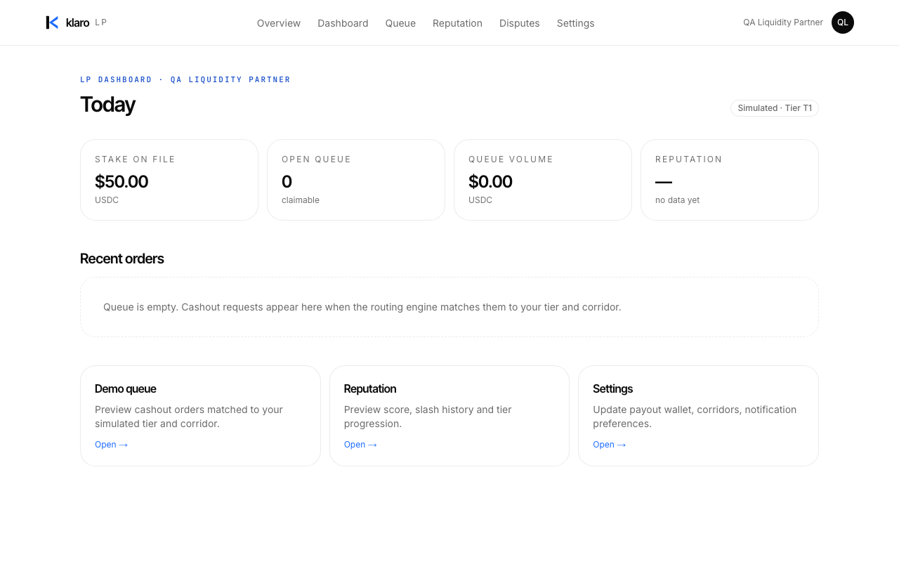

USDC invoicing on Arc — create, pay, settle, verify a receipt. Every screen below is a real capture from the live https://www.myklaro.app product; every transaction is on-chain and independently verifiable.
Stack: Arc L1 (USDC gas) · Circle CCTP V2 (cross-chain pay-in) · Circle Modular Wallets (passkeys) · Next.js 15 + wagmi/viem · BullMQ operator daemon · Supabase.
Coverage: 531 Foundry contract tests + web/daemon suites + Playwright e2e (desktop + mobile) — and a live end-to-end run: invoice created → paid cross-chain → screened (OFAC + KYB) → settled → receipt anchored.
Honest by default: every surface is labelled live / sandbox / access-pending. No dead buttons, no mock presented as real.
The public landing and the authenticated vendor dashboard — as a real user sees them.


A vendor creates an invoice, publishes it on-chain, a buyer pays it in USDC, the operator daemon screens + settles it, and an audit-grade receipt is anchored on Arc. This is the headline flow — proven end to end on-chain.





A buyer pays in USDC from Base Sepolia — burned there, attested by Circle Iris, and minted natively on Arc to the vendor. No bridge, no wrapped tokens.

Every payment is screened before funds are released — OFAC sanctions list check plus Sumsub KYB. Clean + verified payments auto-settle; sanctioned or unverified ones are held. No personal data is ever written on-chain — only hashes, addresses, and status events.
Three personas, one product: the vendor dashboard (create, cashout, reputation, delegations, team), the liquidity-provider console (stake, queue, claim), and the operator admin console (invoices, disputes, sanctions, LPs, vendors, audits).

The receipt isn't just a page — it's a public, verifiable primitive. A typed SDK reads AuditReceipt.verify / anchorOf on-chain, and a zero-dependency web component (<klaro-receipt-badge>) embeds a live "Verified · Klaro" seal on any third-party site, backed by the public /api/v1/receipts/[hash] endpoint (CORS-enabled, 200 = anchored / 404 = missing).
receipt.verify(hash) → true · anchorOf(hash) → anchor tuple (on-chain)Every link below is a real transaction on Arc Testnet or Base Sepolia with status = success. Click through to the explorer to verify independently.
| Cross-chain pay-in (Base → Arc, CCTP V2) | Live-proven on-chain |
| On-Arc invoice payment + settle → receipt | Live-proven on-chain |
| Compliance screening (OFAC + KYB) | Live |
| Disputes, LP staking, admin console | Live-proven |
| MoonPay / Sumsub / QuickBooks | Sandbox — verified working |
| Circle Modular Wallets (passkey) | Wired · ready for app id |
| Circle Gateway / mainnet | Not claimed |